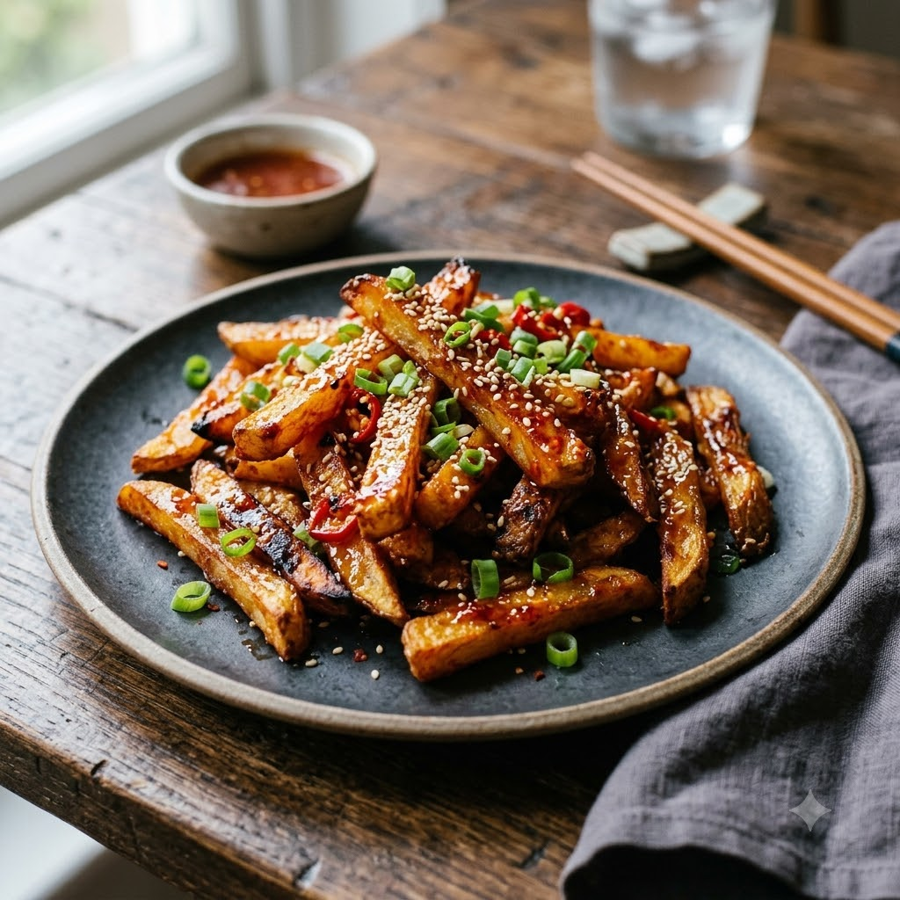

Airfryer (Fry the potatoes) → Chef Magic (Toss 200°C Fry 18 min + Toss 6 min in glaze) — Serves 4
Prep ahead: Par-boil the potato strips for 3 minutes before coating, so the inside stays soft while the outside crisps up.
Ingredients
Method
Tip: Toss the potatoes in the honey glaze at the very last second — honey-based sauces soften a crisp coating faster than a